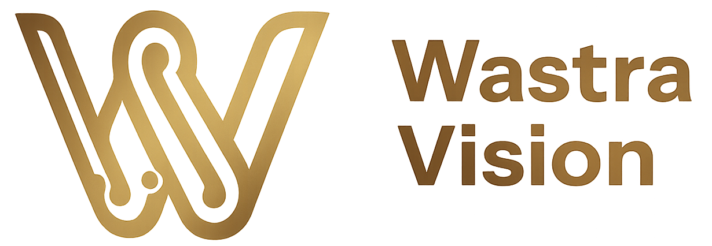
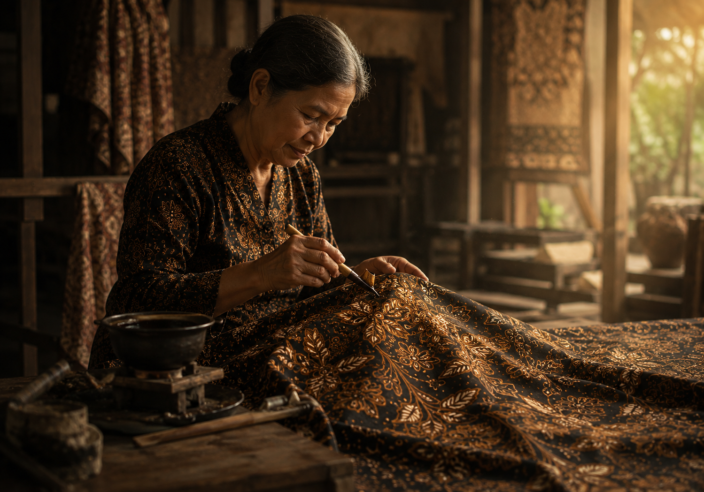
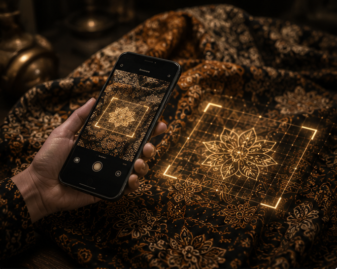
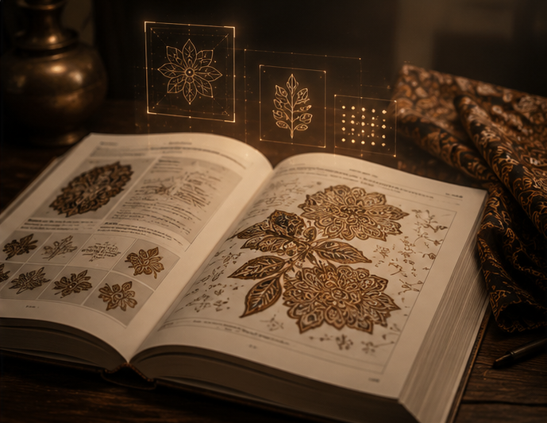
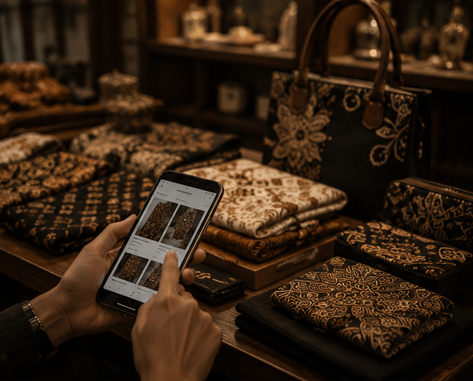
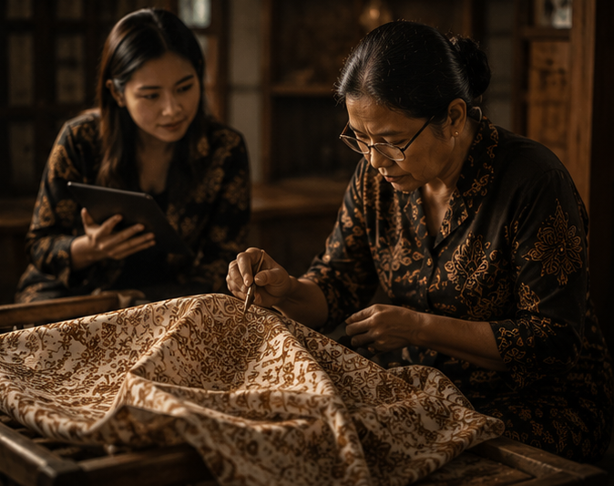

Setiap Motif Punya
Cerita. Setiap Helai
Punya Makna.
Identifikasi setiap pola, pelajari filosofi terdalam, dan dukung pengrajin lokal melalui teknologi AI tercanggih.

Identifikasi setiap pola, pelajari filosofi terdalam, dan dukung pengrajin lokal melalui teknologi AI tercanggih.

Mengidentifikasi ribuan motif batik secara presisi hingga ke detail isen-isen terkecil.
Memberikan edukasi mendalam mengenai sejarah dan makna luhur yang terkandung dalam kain.
Menjamin keaslian teknik (Tulis/Cap) untuk menghargai nilai karya pengrajin lokal.

Unggah foto atau gunakan kamera perangkat Anda untuk mendapatkan analisis detail mengenai identitas wastra Anda.

Wastravision menjembatani Anda langsung dengan UMKM Batik terverifikasi. Kami memastikan setiap transaksi mendukung keberlanjutan ekonomi tanpa perantara antara konsumen dengan pengrajin lokal.
Identifikasi Motif Batik Favorit Anda.

Temukan Sejarah dan Makna di Balik Jalinan.

Temukan Produk Melalui Toko UMKM Kami.

Membantu Melestarikan Budaya Nusantara.
